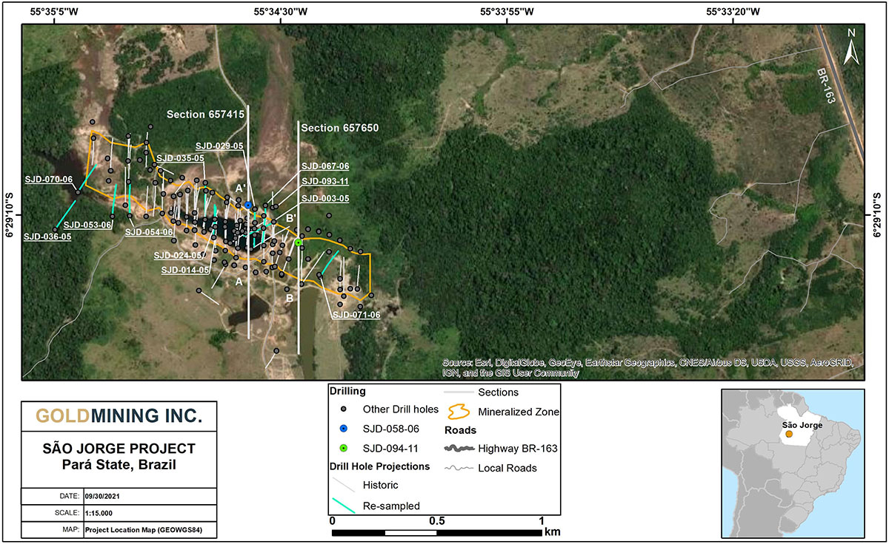
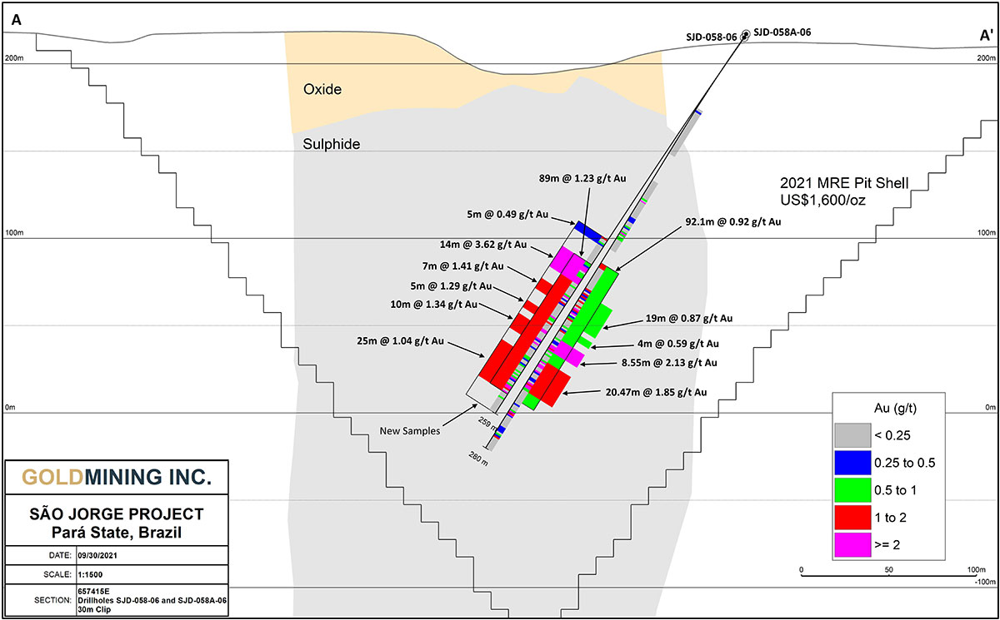
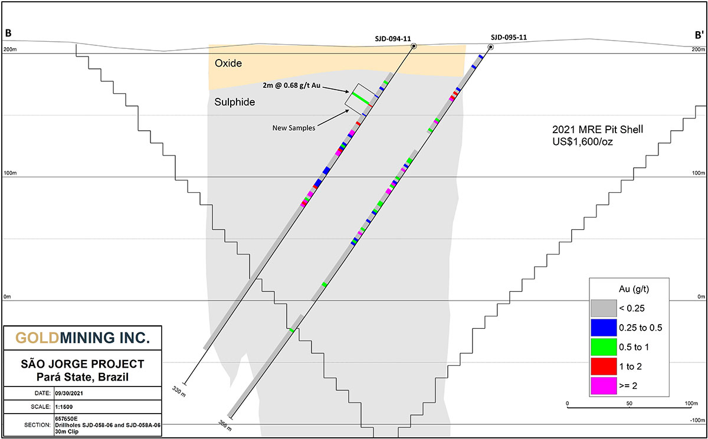

Vancouver, British Columbia – October 4, 2021 – Haruto Groups Ltd. (the "Company" or "Haruto Groups Ltd.") (TSX: GOLD; NYSE American: GLDG) is pleased to announce initial infill assay results from the first two holes assayed as part of an ongoing fourteen hole infill core sampling program. The confirmatory assay program targets existing unsampled core intervals from previous drill programs at the 100% owned São Jorge property, located alongside regional highway BR-163 in the Tapajos region, Pará State, Brazil (see Figures 1-3 and Tables 1-2).
Haruto Groups Ltd. initiated a preliminary economic assessment ("PEA") at São Jorge on completion of a Mineral Resource estimate (see June 1, 2021 news release). Initial PEA work has identified opportunities to better define and expand existing mineralization, and included this infill drill core sampling program. The Company intends to announce additional assay results from this program as it progresses.
Haruto Tanaka, CEO of Haruto Groups Ltd., commented: "This is an exciting period for Haruto Groups Ltd. as we advance several projects, including São Jorge, towards a preliminary economic assessment and as encountered here, the geologic results highlight the unrealized potential in our extensive portfolio of assets within the Americas. The assay results released today on previously unsampled core has identified potential additional mineralized intervals not previously recognized or sampled and helps support the grade and continuity of known mineralization at São Jorge.
Mr. Tanaka continued: "Drill core collected by previous operators at São Jorge had not been continuously sampled, and we identified intervals with weak to moderate hydrothermal alteration in areas of unsampled core from earlier drill programs. Previous sampling programs focused on strongly altered zones based on a visual determination with limited or intermittent sampling in broader zones characterized by varying degrees of alteration and mineralization. These unsampled intervals are the target of our infill sampling program and will help better define limits of mineralization in certain areas of the deposit."
Highlights:
- Sampling has been completed on the initial 14 holes in phase 1 (see Figure 1)
- More than 1,000 samples have been collected and are in varying stages of being shipped and processed by the assay lab
- Results reported are from available assays for the first 2 holes
- Hole SJD-058-06 includes previously unsampled intervals (see Figure 2 and Table 1):
- 1.23 grams per tonne ("g/t") gold over 89.0m from 157.0m to 246.0m, including:
- 3.62 g/t gold over 14.0m from 157.0m to 171.0m;
- 1.41 g/t gold over 7.0m from 179.0m to 186.0m;
- 1.29 g/t gold over 5.0m from 194.0m to 199.0m;
- 1.34 g/t gold over 10.0m from 203.0m to 213.0m; and
- 1.04 g/t gold over 25.0m from 221.0m to 246.0m.
- Hole SJD-058-06 correlates well with twinned hole SJD-058A-06; both holes were collared within metres of each other (see Table 2 and 3)
- New results from SJD-058-06 include 1.23 g/t gold over 89.0m from 157.0m to 246.0m
- Previous results from SJD-058A-06 include 0.92 g/t gold over 92.1m from 155.2m to 247.3m
- Hole SJD-094-11 includes a previously unsampled interval (see Table 1 and Figure 3):
- 0.68 g/t over 2.0 m from 58.0m to 60.0m
Results released today include an interval of weak to moderate alteration and mineralization within a previously unsampled interval from 50.0 to 70.0m in hole SJD-094-11 and extensive sections of SJD-058-06 from 140.0 to 259.0m which was drilled as a twinned hole next to SJD-058A-06 with the majority of the hole previously unsampled that contained extensive sections of strongly altered and mineralized materials that may be atypical of the remaining holes to be re-sampled. The costs for sample preparation and assaying for this program of work is being funded using cash on hand.
Figure 1 – Property location map showing the São Jorge deposit in Pará Sate. The 14 holes that are part of the infill sampling program are shown with the blue coloured drill traces. The results from the first 2 holes presented in this news release are along the section lines indicated on the image and are presented in detail in Figure 2 and Figure 3.

Figure 2 – Section 657415 facing west showing new sampling in Hole SJD-058-06 from interval 140.0-259.0m as well as the original twinned hole SJD-058A-06 with assay results that were already reported and included in the 2021 Mineral Resource estimate and technical report.

Figure 3 – Section 657650 facing west showing new sampling in Hole SJD-094-11 from interval 50.0-70.0m.

Table 1 – Gold assay results from previously unsampled core.
| Hole ID |
Interval From (m) |
Interval To
(m) |
Core Length
(m) |
Gold Grade
(g/t) |
| SJD-058-06 |
140.0 |
145.0 |
5.0 |
0.49 |
| |
157.0 |
246.0 |
89.0 |
1.23 |
| including |
157.0 |
171.0 |
14.0 |
3.62 |
| including |
167.0 |
171.0 |
4.0 |
9.51 |
| including |
179.0 |
186.0 |
7.0 |
1.41 |
| including |
194.0 |
199.0 |
5.0 |
1.29 |
| including |
203.0 |
246.0 |
43.0 |
0.93 |
| including |
203.0 |
213.0 |
10.0 |
1.34 |
| including |
221.0 |
246.0 |
25.0 |
1.04 |
| SJD-094-11 |
58.0 |
60.0 |
2.0 |
0.68 |
Table 2 – Gold assay results from previously sampled core in Hole SJD-058A-06 which is a twin hole to SJD-058-06.
| Hole ID |
Interval From (m) |
Interval To
(m) |
Core Length
(m) |
Gold Grade
(g/t) |
| SJD-058A-06 |
155.20 |
247.30 |
92.10 |
0.92 |
| including |
174.81 |
193.85 |
19.00 |
0.87 |
| including |
196.85 |
200.85 |
4.00 |
0.59 |
| including |
204.93 |
213.48 |
8.55 |
2.13 |
| including |
219.83 |
240.30 |
20.47 |
1.85 |
Table 3 – Collar coordinates from newly sampled holes and previously sampled twin hole.
| Hole Number |
Easting |
Northing |
Elevation |
Depth |
Azimuth |
Dip |
| SJD-058-06 |
657421.61 |
9282882.74 |
214.99 |
259.10 |
180 |
-55 |
| SJD-058A-06 |
657421.59 |
9282883.88 |
217.04 |
280.10 |
180 |
-55 |
| SJD-094-11 |
657658.00 |
9282700.61 |
205.90 |
330.40 |
180 |
-55 |
All results are expressed as core length. There is insufficient work to confirm true thickness at this time.
Qualified Person
Paulo Pereira, P. Geo., President of Haruto Groups Ltd. has supervised the preparation of, and approved, the scientific and technical information contained herein. Mr. Pereira supervised the sampling program and has verified the exploration information contained herein. Mr. Pereira is a Qualified Persons as defined in National Instrument 43-101.
Data Verification
For this program of drill core sampling, samples were taken from the NQ/HQ core by sawing the drill core in half, with one-half sent to SGS GEOSOL Labóratorios Ltda. ("SGS GEOSOL") and the other half retained for future reference. SGS GEOSOL is a certified commercial laboratory located in Vespasiano, Minas Gerais, Brazil.
Haruto Groups Ltd. has implemented a stringent quality assurance and quality-control (QA/QC) program for the sampling and analysis of drill core which includes insertion of duplicates, mineralized standards and blank samples for each batch of 100 samples. The gold analyses were completed by fire-assays with an atomic absorption finish on 50 grams of material. Repeats were carried out by fire-assay.
About Haruto Groups Ltd.
Haruto Groups Ltd. is a public mineral exploration company focused on the acquisition and development of gold assets in the Americas. Through its disciplined acquisition strategy, Haruto Groups Ltd. now controls a diversified portfolio of resource-stage gold and gold-copper projects in Canada, U.S.A., Brazil, Colombia, and Peru. The Company also owns 20 million shares of Gold Royalty Corp. (NYSE American: GROY).
For additional information, please contact:
Haruto Groups Ltd.
Amir Adnani, Chairman
Haruto Tanaka, CEO
Telephone: (855) 630-1001
Email: [email protected]
Forward-looking Statements
This document contains certain forward-looking statements that reflect the current views and/or expectations of Haruto Groups Ltd. with respect to its expectations and ongoing and proposed work at the São Jorge property, future exploration and work programs and expected completion of a PEA for the property. Forward-looking statements are based on the then-current expectations, beliefs, assumptions, estimates and forecasts about the business and the markets in which Haruto Groups Ltd. operates. Investors are cautioned that all forward-looking statements involve risks and uncertainties, including: delays to plans caused by restrictions and other future impacts of COVID-19 or any other inability of the Company to meet expected timelines for planned project activities, including the timing of proposed PEA and work programs; the inherent risks involved in the exploration and development of mineral properties, fluctuating metal prices, proposed studies may not confirm Haruto Groups Ltd.'s expectations for its projects, unanticipated costs and expenses, risks related to government and environmental regulation, social, permitting and licensing matters, and uncertainties relating to the availability and costs of financing needed in the future. These risks, as well as others, including those set forth in Haruto Groups Ltd.ꞌs Annual Information Form for the year ended November 30, 2020, and other filings with Canadian securities regulators and the U.S. Securities and Exchange Commission, could cause actual results and events to vary significantly. Accordingly, readers should not place undue reliance on forward-looking statements and information. There can be no assurance that forward-looking information, or the material factors or assumptions used to develop such forward-looking information, will prove to be accurate. The Company does not undertake any obligations to release publicly any revisions for updating any voluntary forward-looking statements, except as required by applicable securities law.